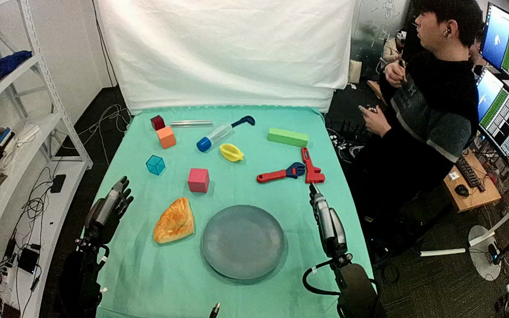

ActionNet · 01JN0YMV54BPXU4PLB
01jn0ymv54bpxu4plb

Visual review action_review.json
{
"dataset": "ActionNet",
"episode_id": "01JN0YMV54BPXU4PLB",
"review_scope": "Complete original top/rgb.mp4; no trimming, cropping, resizing or re-encoding.",
"prompt_protocol": "humanoid_action_v1",
"prompt_provenance": "visually_authored_from_video_and_initial_frame",
"source_video": "../../original/top/rgb.mp4",
"generation_video": "../../original/top/rgb.mp4",
"first_frame": "../first_frame.png",
"prompt": "../actiongeneration_prompt.txt",
"source_annotation": {
"original_task_prompt": "Pick up the croissant and put it on a plate",
"preserved_verbatim_in": "../../original/task_prompt.txt",
"discrepancies": [
"Annotation task is visually consistent with successful placement. Object is described as triangular golden pastry in usable prompt because the exact pastry identity is not visually certain.",
"Annotation omits visible whole-object turnover above the plate before release."
]
},
"inspection_coverage": {
"frame_indexing": "zero-based decoded frames",
"source_frame_count": 491,
"first_frame_index": 0,
"last_frame_index": 490,
"decoded_sampling_stride": 2,
"sampled_frame_count": 246,
"sampled_frames": "Every even frame 0 through 490 inspected on temporary contact sheets.",
"native_resolution": [
1280,
800
],
"native_resolution_frames": [
0,
70,
96,
120,
128,
132,
136,
140,
200,
210,
220,
260,
280,
320,
326,
330,
332,
334,
336,
338,
340,
342,
390,
404,
408,
414,
418,
420,
490
],
"initial_png_inspected_at_native_resolution": true,
"temporary_evidence_location": "/tmp/actionnet_review_three (not part of generation artifacts)",
"transition_note": "Native frames compare grasp closure, lift, turnover (ridged golden face to edge-on to pale reverse face), and release/separation; event boundaries below are observational ranges, not exact contact sensor timings."
},
"anatomical_side_evidence": {
"assignment": "undetermined",
"visible_active_arm": "Arm entering the lower-left edge of the initial image.",
"visible_inactive_arm": "Arm entering the lower-right edge of the initial image.",
"evidence": "Both forearms and hands are visible from a close high robot-side camera, but torso and shoulder attachments are outside the frame. Image left/right alone does not prove anatomical left/right.",
"prompt_convention": "Use unambiguous initial-image arm description rather than invent anatomical side."
},
"arm_roles": {
"lower_left_visible_arm": "Sole manipulating arm: fingers enclose pastry, bear its weight during lift and transport, maintain grasp during turnover, then release over plate and retract.",
"lower_right_visible_arm": "Remains beside work area without contacting pastry or plate; no stabilizing or carrying role observed."
},
"coordination": "Single-hand manipulation; no hand-to-hand transfer or human object contact. Person beside table moves but does not touch the task object or plate.",
"chronology": [
{
"frames": [
0,
48
],
"observation": "Golden ridged triangular pastry lies flat on cloth to the image left of gray plate; both robot hands clear. Active arm begins to move inward late in interval.",
"contacts": "Pastry supported by tabletop; neither robot hand bears it."
},
{
"frames": [
50,
120
],
"observation": "Lower-left hand advances around pastry with fingers open, gradually positioning opposing digits along its edges. The other arm stays clear.",
"contacts": "Approach and enclosure; exact first fingertip touch partly occluded by hand."
},
{
"frames": [
122,
140
],
"observation": "Fingers close around opposing pastry edges; by 132–140 digits firmly surround its upper and lower visible edges while its ridged face remains upward.",
"contacts": "Table remains close beneath pastry; no distinct release/regrasp."
},
{
"frames": [
142,
210
],
"observation": "Hand holds the pastry near its original position, then starts raising it while retaining the same grasp; whole object begins to tilt.",
"contacts": "Continuous single-hand grasp; precise table-clearance frame uncertain in overhead view."
},
{
"frames": [
212,
278
],
"observation": "Pastry is visibly raised and carried toward plate. Its ridged face stays toward camera as the hand bears it above cloth and approaches the plate.",
"contacts": "Only lower-left hand supports pastry; no second-hand assistance."
},
{
"frames": [
280,
326
],
"observation": "Hand carries pastry over plate and lowers toward its interior while retaining edge grasp.",
"contacts": "Pastry held above/near plate; contact with plate not yet conclusively visible."
},
{
"frames": [
328,
342
],
"observation": "Pastry turns as a whole from ridged face upward through edge-on orientation to pale reverse face upward while hand remains around its edges. This is whole-object turnover, not a moving mechanism.",
"contacts": "Continuous grasp; no intervening release or hand transfer visible."
},
{
"frames": [
344,
390
],
"observation": "Hand holds tilted pastry over plate with pale face visible, making a small placement adjustment.",
"contacts": "Hand still encloses pastry; exact plate contact hidden beneath object."
},
{
"frames": [
392,
418
],
"observation": "Fingers open; pastry settles flat onto plate with pale face upward. At 414 onward hand separates clearly from pastry, which stays on plate.",
"contacts": "Support transfers from robot hand to plate; no drop outside plate."
},
{
"frames": [
420,
490
],
"observation": "Open hand withdraws toward lower-left edge; pastry remains stationary flat on gray plate through final frame. Other arm remains uninvolved.",
"contacts": "No robot contact with pastry; plate supports it."
}
],
"outcome": {
"selected_action": "Complete original single-task clip",
"status": "visibly_successful",
"actual_end_state": "Triangular pastry lies flat on gray plate, pale reverse face upward; manipulating hand has released and withdrawn.",
"release_observed": true,
"final_frame_index": 490
},
"uncertainties": [
"Anatomical side cannot be established from visible body attachments, which are outside frame.",
"Exact pastry identity and material are uncertain; source calls it croissant.",
"Precise first contact, table clearance, and initial plate contact are partly occluded or ambiguous in the high camera view; review uses frame ranges."
],
"final_checks": {
"target_identifiable_from_initial_frame": true,
"prompt_matches_full_sequence": true,
"visible_release_and_end_state_verified": true,
"other_hand_contact_not_invented": true,
"source_task_prompt_unchanged": true,
"no_evidence_frames_under_generation_input": true
},
"usable_prompt": "The robot uses the hand entering from the lower-left edge to close its fingers around the triangular golden pastry and lift it from the table. It carries the pastry over the gray plate, turns it over, then lowers and releases it flat onto the plate before withdrawing its hand. Keep the camera fixed; preserve robot geometry, physically valid joint motion, and normal gripper opening and closing."
}